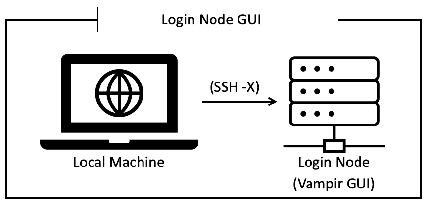
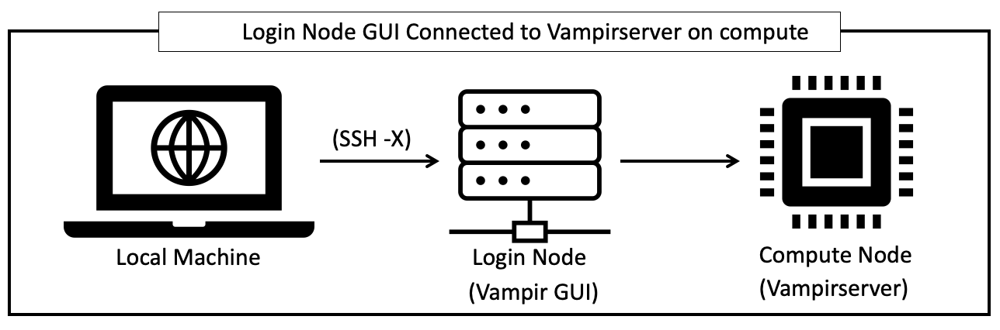
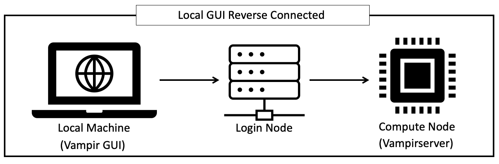

{kind=link}
Vampir
Overview
Vampir is a software performance visualizer focused on highly parallel applications. It presents a unified view on an application run including the use of programming paradigms like MPI, OpenMP, PThreads, CUDA, OpenCL and OpenACC. It also incorporates file I/O, hardware performance counters and other performance data sources. Various interactive displays offer detailed insight into the performance behavior of the analyzed application. Vampirs scalable analysis server and visualization engine enable interactive navigation of large amounts of performance data. Score-P and TAU generate OTF2 trace files for Vampir to visualize.
Usage
Vampir can be run a few different ways depending on a couple of factors. If you have a large trace file it would benefit from utilizing VampirServer to process the trace file with the systems compute power while reverse connected to the Vampir GUI. If the trace file is small enough (< ~1 GB), it would do just fine viewing on a login node.
vampirserver is the backend software component that can run across multiple compute nodes taking advantage
of the machines memory, this in turn provides an increase in performance for viewing large trace files i.e. >1GB.
Note
VampirServer does not take advantage of GPU components
The following sections will cover the 3 different methods for using Vampir on Summit.
For each method, you will need to enable X11 forwarding
when logging in to Summit to allow for launching a GUI from Summit.
To do so, you can use the ssh option -X as shown below
$ ssh -X <USERID>@summit.olcf.ornl.gov
Please visit this link if you need more information for logging onto Summit
Vampir on a Login Node
{kind=link}
Note
Do not run Vampir on a login node for trace files > 1 GB! Please see the next 2 sections for running larger trace files.
After logging onto Summit (with X11 forwarding), execute the series of commands below:
$ module load vampir
$ vampir &
Once the GUI pops up (might take a few seconds), you can load a file resident on the file system by
selecting Local File for file selection.
{kind=link}
Vampir Using VampirServer
{kind=link}
Note
Please use this connection method for trace files larger than (> 1 GB), and see the next section Vampir Tunneling to VampirServer for an even more optimal solution. Attempting to visualize large trace files (> 1 GB) will be very slow over X11 forwarding and can cause decreased performance on the shared login nodes for other users
After connecting to Summit using X11 forwarding you will need to load the Vampir module and start the VampirServer.
$ module load vampir
$ vampirserver start -- -P <projectID> -w <walltime> -q <queue>
#Example: vampirserver start -- -P 123456 -w 60 -q debug
Successful VampirServer startup message should appear in terminal window. You will need this information!
[Test@login5.summit ~]$ vampirserver start - - -P 123456 -w 60 -q debug
Launching VampirServer...
Submitting LSF batch job (this might take a while)...
Warning: more than 1 task/rank assigned to a core
VampirServer 9.11.1 OLCF (4626dba5)
Licensed to ORNL
Running 4 analysis processes... (abort with vampirserver stop 10102)
User: Test
Password: XXXXXXXXXXXX
VampirServer <10102> listens on: h50n05:30040
Launch the Vampir GUI
$ vampir &
Once the GUI has opened, you will need to connect to the VampirServer using the
Remote File option as shown below. If there is a recent files window open, select open other.
Enter the node ID and the port number and press Connect. Also, you will need to select Encrypted password from the Authentication dropdown option.
{kind=link}
When the server authentication window pops up, you will need to enter your USERID
& the VampirServer password that was printed on the terminal screen.
Once authenticated, you will be able to navigate through the filesystem to your .otf2 files
{kind=link}
Vampir Tunneling to VampirServer
{kind=link}
This connection method is more complex than the other 2 methods, however it also can provide a more optimal experience for very large trace files.
Note
This method will require you to have a local copy of the Vampir GUI already installed on your machine.
If you do not have a local copy, please reach out to the help desk at help@olcf.ornl.gov for instructions on getting a local copy.
Similar to the previous methods outlined above, you will start by connecting to Summit. Once connected you will then need to start the VampirServer.
$ module load vampir
#Start the VampirServer
$ vampirserver start -- -P <projectID> -w <walltime> -q <queue>
Once you have successfully authenticated, you will need the information printed on the terminal window. That includes:
Node ID
Port Number
password
Once the VampirServer is started, in a fresh terminal window on your Local machine you can then initiate the port forward command. This will open a secure tunnel from your local machine to the backend server running VampirServer.
Port Forwarding
ssh -L <localport>:<Node ID>:<Remote port> <USERID>@summit.olcf.ornl.gov
Note
The local port number can be any unused port number on your local machinetry a number between 30000-30030.
To check if the port you picked is open run:
$ netstat -ab | grep "<selected port number>"
#This can take a minute to return anything. If nothing is returned, your selected port is open
After submitting the port forward command as seen above, it will ask for your login password to access Summit. Leave this terminal window open!
Launch the Vampir GUI on your local machine
Similar to how we have connected Vampir to the VampirServer in the previous section, you will follow the same steps
except you will use localhost for the server name and your local machine port number you selected.
Press Connect and this should open the authentication window where you will enter your UserID and the VampirServer password
printed after a successful connection.
{kind=link}
Once the authentication step is complete, it should open up the remote filesystem for you to navigate to and load your .otf2 trace file.
Vampir GUI Demo
Please see the provided video below to get a brief demo of the Vampir GUI provided by TU-Dresden and presented by Ronny Brendel.
Note
You can skip ahead to around the 22 minute mark!
2018 Score-P / Vampir Workshop from OLCF on Vimeo.
This recording is from the 2018 Score-P / Vampir workshop that took place at ORNL on August 17, 2018. In the video, Ronny Brendel gives an introduction to the Score-P and Vampir tools, which are often used together to collect performance profiles/traces from an application and visualize the results.